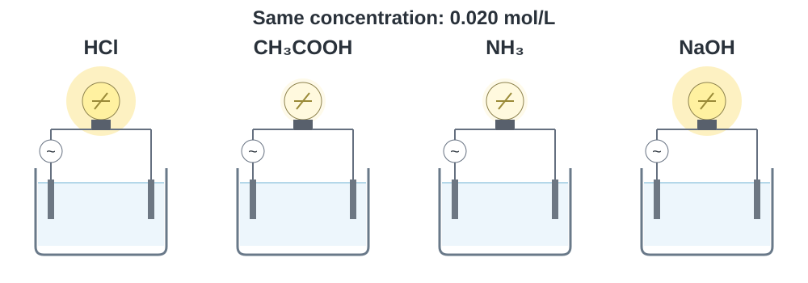
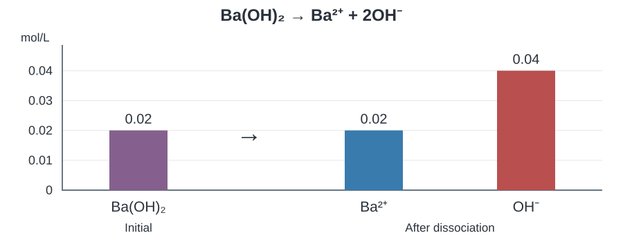
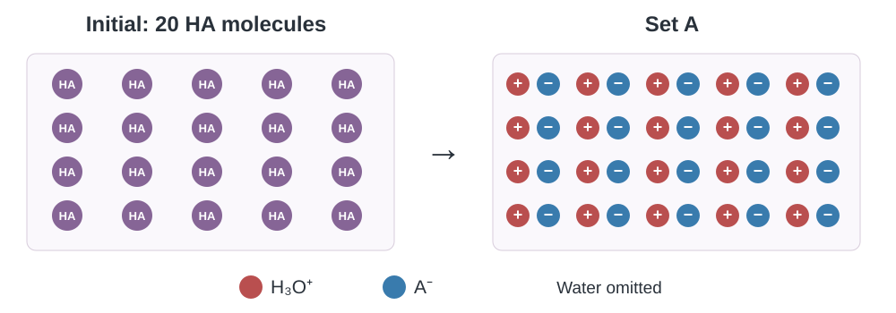
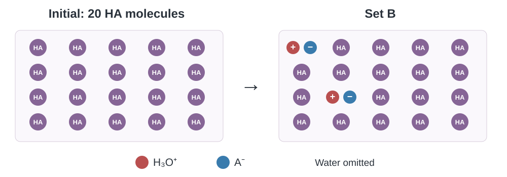
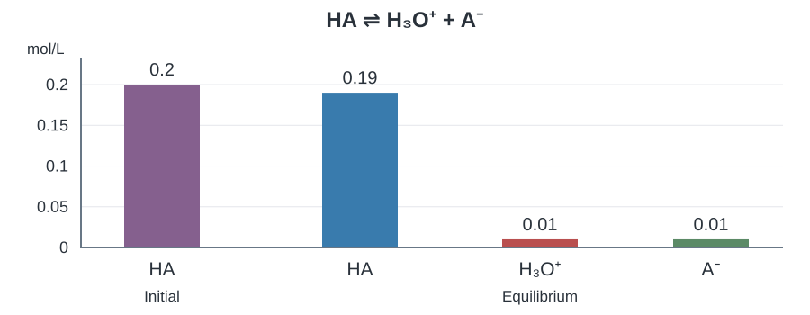
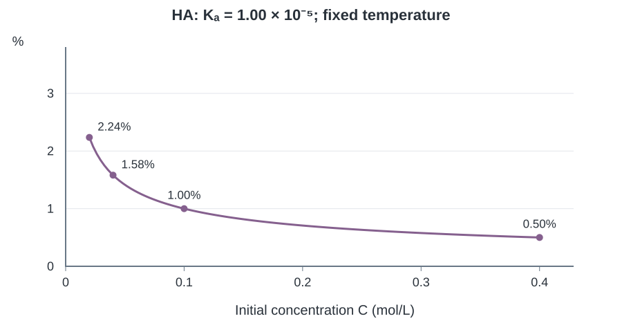

เคมี • เล่ม 4 • บทที่ 10 กรด–เบส
10.3 การแตกตัวของกรด เบส และน้ำ
อ่านภาพ เขียนสมการ ตั้งสมดุล และเลือกวิธีคำนวณ
เขียนสาระสำคัญใต้หัวข้อ และแสดงวิธีคิดพร้อมหน่วยในพื้นที่ของแต่ละข้อ เปิดเฉลยเพื่อตรวจเหตุผล สมการ และเงื่อนไขที่ใช้
1 ไอออน การนำไฟฟ้า และความแรง
สารละลายนำไฟฟ้าได้อย่างไร
เปรียบเทียบสารละลายที่มีความเข้มข้น 0.020 mol/L เท่ากัน ใช้อุปกรณ์และอุณหภูมิเดียวกัน ภาพแสดงความสว่างเชิงเปรียบเทียบ ไม่ใช่มาตรวัดจำนวนไอออน

คำถาม 1
คำถาม 2
คำถาม 3
ไอออนกับการนำไฟฟ้า
ความแรงกับความเข้มข้น
กรด–เบสแก่ และกรด–เบสอ่อน
ความเข้มข้นไม่ใช่ความแรง
คำถาม 4
กรดแก่ที่ใช้ในหัวข้อนี้
HCl, HBr, HI, HNO3 และ HClO4
HF เป็นกรดอ่อน ส่วน H2SO4 แตกตัวขั้นแรกได้สมบูรณ์ แต่ขั้นที่สองไม่สมบูรณ์ จึงห้ามคูณจำนวน H ในสูตรเป็นความเข้มข้นของ H3O+ โดยอัตโนมัติ
เบสแก่ที่ใช้ในหัวข้อนี้
LiOH, NaOH, KOH, Ca(OH)2, Sr(OH)2 และ Ba(OH)2
พิจารณาส่วนที่ละลายน้ำแล้ว M(OH)2 1 mol ให้ OH- 2 mol ข้อคำนวณในใบนี้ถือว่าสารละลายได้ตามเงื่อนไขที่โจทย์ให้
คำถาม 5
2 อ่านอัตราส่วนจากสมการ
สมการและความเข้มข้นของไอออน
ดุลสมการ แล้วให้หนึ่งส่วนของการเปลี่ยนเท่ากับ c₀ mol/L แถว C เปลี่ยนตามอัตราส่วน −1 : +1 : +1. c₀ คือความเข้มข้นเริ่มต้น C ในโจทย์ ส่วน C ที่เป็นชื่อแถวหมายถึง Change.
| แถว (mol/L) | HCl | H3O+ | Cl− |
|---|---|---|---|
| I — เริ่มต้น | c₀ | 0 | 0 |
| C — เปลี่ยนไป | −c₀ | +c₀ | +c₀ |
| F — สุดท้าย | 0 | c₀ | c₀ |
ดุลสมการ แล้วให้หนึ่งส่วนของการเปลี่ยนเท่ากับ c₀ mol/L แถว C เปลี่ยนตามอัตราส่วน −1 : +1 : +1. c₀ คือความเข้มข้นเริ่มต้น C ในโจทย์ ส่วน C ที่เป็นชื่อแถวหมายถึง Change.
| แถว (mol/L) | NaOH | Na+ | OH− |
|---|---|---|---|
| I — เริ่มต้น | c₀ | 0 | 0 |
| C — เปลี่ยนไป | −c₀ | +c₀ | +c₀ |
| F — สุดท้าย | 0 | c₀ | c₀ |
C ในชื่อแถวหมายถึง Change ส่วน c₀ ในตารางแทนความเข้มข้นเริ่มต้น เลขดุลกำหนดการเปลี่ยนแต่ละคอลัมน์.
เมื่อกรดหรือเบสแก่มีความเข้มข้นเริ่มต้น C ให้ใช้สัมประสิทธิ์ในสมการที่ดุลแล้วหาไอออนแต่ละชนิด สำหรับสองสมการนี้ ไอออนแต่ละชนิดมีความเข้มข้นเท่ากับ C

คำถาม 6
ดุลสมการ แล้วให้หนึ่งส่วนของการเปลี่ยนเท่ากับ 0.10 mol/L แถว C เปลี่ยนตามอัตราส่วน −1 : +1 : +1.
| แถว (mol/L) | NaOH | Na+ | OH− |
|---|---|---|---|
| I — เริ่มต้น | 0.10 | 0 | 0 |
| C — เปลี่ยนไป | −0.10 | +0.10 | +0.10 |
| F — สุดท้าย | 0 | 0.10 | 0.10 |
คำถาม 7
ดุลสมการ แล้วให้หนึ่งส่วนของการเปลี่ยนเท่ากับ c₀ mol/L แถว C เปลี่ยนตามอัตราส่วน −1 : +1 : +2. c₀ คือความเข้มข้นเริ่มต้น C ในโจทย์ ส่วน C ที่เป็นชื่อแถวหมายถึง Change.
| แถว (mol/L) | Ba(OH)2 | Ba2+ | OH− |
|---|---|---|---|
| I — เริ่มต้น | c₀ | 0 | 0 |
| C — เปลี่ยนไป | −c₀ | +c₀ | +2c₀ |
| F — สุดท้าย | 0 | c₀ | 2c₀ |
คำถาม 8
ดุลสมการ แล้วให้หนึ่งส่วนของการเปลี่ยนเท่ากับ 0.10 mol/L แถว C เปลี่ยนตามอัตราส่วน −1 : +1 : +2.
| แถว (mol/L) | Ba(OH)2 | Ba2+ | OH− |
|---|---|---|---|
| I — เริ่มต้น | 0.10 | 0 | 0 |
| C — เปลี่ยนไป | −0.10 | +0.10 | +2×0.10 |
| F — สุดท้าย | 0 | 0.10 | 0.20 |
3 โมล มวล และการเจือจาง
จากความเข้มข้นไปจำนวนโมล
ความเข้มข้น จำนวนโมล และมวล
จัดข้อมูลเป็น mol หรือ mol/L ก่อนลงตาราง และใช้หน่วยเดียวกันทุกคอลัมน์ ICF: I เริ่มต้น, C เปลี่ยนตามเลขดุล, F สุดท้าย. กรด–เบสอ่อนใช้ ICE และอ่านค่าที่สมดุล E.
\[250\ \mathrm{mL}\times\frac{1\ \mathrm L}{1000\ \mathrm{mL}}\times\frac{0.20\ \mathrm{mol}}{1\ \mathrm L}=0.050\ \mathrm{mol}\]ตัวอย่างการตัดหน่วย: mL ตัดกับ mL แล้ว L ตัดกับ L เหลือ mol.
\[m\ \mathrm g\times\frac{1\ \mathrm{mol}}{M\ \mathrm g}=\frac{m}{M}\ \mathrm{mol}\]ถ้าทราบมวลเป็นกรัม ให้กลับตัวคูณมวลโมลาร์เพื่อให้ g ตัดกัน เหลือ mol โดย M เป็นค่าตัวเลขมวลโมลาร์หน่วย g/mol.
\[n\ \mathrm{mol}\times\frac{1}{V\ \mathrm L}=\frac{n}{V}\ \mathrm{mol/L}\]เปลี่ยนโมลเป็นโมลาร์โดยหารปริมาตรสารละลายหน่วย L จึงเหลือ mol/L.
\[n\ \mathrm{mol}\times\frac{6.02\times10^{23}\ \text{particles}}{1\ \mathrm{mol}}\times\frac{k\ \text{atoms}}{1\ \text{particle}}=(n)(6.02\times10^{23})(k)\ \text{atoms}\]ถ้าโจทย์ถามอนุภาคหรืออะตอม ให้ระบุว่าอนุภาคนั้นคืออะตอม โมเลกุล ไอออน หรือหน่วยสูตร หนึ่งโมลมีประมาณ 6.02×10²³ อนุภาค และ k คือจำนวนอะตอมชนิดที่ถามต่อหนึ่งอนุภาค; หน่วย mol และอนุภาคตัดกัน เหลืออะตอม สารไอออนิกนับเป็นหน่วยสูตร ไม่เรียกโมเลกุล.
C หน่วย mol/L, V เป็นปริมาตรสารละลายหน่วย L, n หน่วย mol และ M เป็นมวลโมลาร์หน่วย g/mol แปลง mL เป็น L โดยหาร 1000 ก่อนแทนค่า
ตัวอย่าง 1
หน่วย L ตัดกัน เหลือ mol ของ H₃O⁺ จัดข้อมูลนี้ก่อนลงตาราง.
ข้อมูล H₃O⁺ ที่โจทย์ให้เป็นปริมาณหลังแตกตัว จึงใช้แถว F ของไอออน; ให้เริ่มต้นสารที่จะละลาย a mol.
\[\ce{HCl + H2O -> H3O+ + Cl-}\]ดุลสมการ แล้วให้หนึ่งส่วนของการเปลี่ยนเท่ากับ a mol แถว C เปลี่ยนตามอัตราส่วน −1 : +1 : +1.
| แถว (mol) | HCl | H3O+ | Cl− |
|---|---|---|---|
| I — เริ่มต้น | a | 0 | 0 |
| C — เปลี่ยนไป | −a | +a | +a |
| F — สุดท้าย | 0 | a | a |
จากแถว F: 1a = 0.150 mol จึง a = 0.150 mol.
HCl เป็นกรดแก่ อัตราส่วน HCl : H₃O⁺ : Cl⁻ เป็น 1 : 1 : 1
คำถาม 9
ตัดหน่วย mL แล้วตัด L เหลือ mol ของ HCl จัดข้อมูลนี้ก่อนลงตาราง.
\[\ce{HCl + H2O -> H3O+ + Cl-}\]ดุลสมการ แล้วให้หนึ่งส่วนของการเปลี่ยนเท่ากับ 0.050 mol แถว C เปลี่ยนตามอัตราส่วน −1 : +1 : +1.
| แถว (mol) | HCl | H3O+ | Cl− |
|---|---|---|---|
| I — เริ่มต้น | 0.050 | 0 | 0 |
| C — เปลี่ยนไป | −0.050 | +0.050 | +0.050 |
| F — สุดท้าย | 0 | 0.050 | 0.050 |
250 mL = 0.250 L และ H3O+ เข้มข้น 0.20 mol/L
เติมน้ำแล้วอะไรคงเดิม
การเจือจางสารละลายกรด–เบสแก่
ดุลสมการ แล้วให้หนึ่งส่วนของการเปลี่ยนเท่ากับ a mol แถว C เปลี่ยนตามอัตราส่วน −1 : +1 : +1.
| แถว (mol) | NaOH | Na+ | OH− |
|---|---|---|---|
| I — เริ่มต้น | a | 0 | 0 |
| C — เปลี่ยนไป | −a | +a | +a |
| F — สุดท้าย | 0 | a | a |
การเติมน้ำคงโมลจาก F แล้วเปลี่ยนเฉพาะปริมาตรที่ใช้หาร โมลกับความเข้มข้นจึงต้องแยกกัน.
เมื่อเติมน้ำอย่างเดียว จำนวนโมลของตัวละลายคงเดิม แต่ปริมาตรสารละลายเพิ่ม ความเข้มข้นจึงลดลง ใช้ \(C_1V_1=C_2V_2\) กับสารหรือไอออนชนิดเดียวกันทั้งสองข้าง และใช้ปริมาตรสุดท้ายของสารละลายตัวอย่าง 2 · ก
หน่วย L ตัดกัน เหลือ mol ของ OH⁻ จัดข้อมูลนี้ก่อนลงตาราง.
ข้อมูล OH⁻ ที่โจทย์ให้เป็นปริมาณหลังแตกตัว จึงใช้แถว F ของไอออน; ให้เริ่มต้นสารที่จะละลาย a mol.
\[\ce{Ba(OH)2 -> Ba^2+ + 2OH-}\]ดุลสมการ แล้วให้หนึ่งส่วนของการเปลี่ยนเท่ากับ a mol แถว C เปลี่ยนตามอัตราส่วน −1 : +1 : +2.
| แถว (mol) | Ba(OH)2 | Ba2+ | OH− |
|---|---|---|---|
| I — เริ่มต้น | a | 0 | 0 |
| C — เปลี่ยนไป | −a | +a | +2a |
| F — สุดท้าย | 0 | a | 2a |
จากแถว F: 2a = 0.0100 mol จึง a = 0.0050 mol.
หลังเติมน้ำ โมล Ba²⁺ = 0.00500 และ OH⁻ = 0.0100 คงเดิม ใช้ปริมาตรสุดท้าย 1.00 L.
การเติมเฉพาะน้ำไม่เปลี่ยนโมลของไอออนแต่ละชนิด จึงมีโมลเท่าเดิมหลังเจือจาง
ตัวอย่าง 2 · ข
หน่วย L ตัดกัน เหลือ mol ของ OH⁻ จัดข้อมูลนี้ก่อนลงตาราง.
ข้อมูล OH⁻ ที่โจทย์ให้เป็นปริมาณหลังแตกตัว จึงใช้แถว F ของไอออน; ให้เริ่มต้นสารที่จะละลาย a mol.
\[\ce{Ba(OH)2 -> Ba^2+ + 2OH-}\]ดุลสมการ แล้วให้หนึ่งส่วนของการเปลี่ยนเท่ากับ a mol แถว C เปลี่ยนตามอัตราส่วน −1 : +1 : +2.
| แถว (mol) | Ba(OH)2 | Ba2+ | OH− |
|---|---|---|---|
| I — เริ่มต้น | a | 0 | 0 |
| C — เปลี่ยนไป | −a | +a | +2a |
| F — สุดท้าย | 0 | a | 2a |
จากแถว F: 2a = 0.0100 mol จึง a = 0.0050 mol.
หลังเติมน้ำ โมล Ba²⁺ = 0.00500 และ OH⁻ = 0.0100 คงเดิม ใช้ปริมาตรสุดท้าย 1.00 L.
ใช้ปริมาตรสุดท้าย 1.00 L กับโมลของไอออนแต่ละชนิด
คำถาม 10
ตัดหน่วย mL แล้วตัด L เหลือ mol ของ Ba(OH)₂ จัดข้อมูลนี้ก่อนลงตาราง.
\[\ce{Ba(OH)2 -> Ba^2+ + 2OH-}\]ดุลสมการ แล้วให้หนึ่งส่วนของการเปลี่ยนเท่ากับ 0.010 mol แถว C เปลี่ยนตามอัตราส่วน −1 : +1 : +2.
| แถว (mol) | Ba(OH)2 | Ba2+ | OH− |
|---|---|---|---|
| I — เริ่มต้น | 0.010 | 0 | 0 |
| C — เปลี่ยนไป | −0.010 | +0.010 | +2×0.010 |
| F — สุดท้าย | 0 | 0.010 | 0.020 |
การเติมเฉพาะน้ำหลังแตกตัวคงโมลไอออนจากแถว F แล้วค่อยหารปริมาตรใหม่ 1.00 L.
\[0.020\ \mathrm{mol}\times\frac{1}{1.00\ \mathrm L}=0.02\ \mathrm{mol/L}\]อ่านโมลจากแถว F แล้วหารปริมาตรสุดท้าย เหลือหน่วย mol/L ของ OH⁻.
เริ่มต้น OH- = 2(0.040) = 0.080 mol/L
ย้อนกลับไปหามวลที่ใช้
ลำดับการคำนวณมวล
ดุลสมการ แล้วให้หนึ่งส่วนของการเปลี่ยนเท่ากับ a mol แถว C เปลี่ยนตามอัตราส่วน −1 : +1 : +2.
| แถว (mol) | Ba(OH)2 | Ba2+ | OH− |
|---|---|---|---|
| I — เริ่มต้น | a | 0 | 0 |
| C — เปลี่ยนไป | −a | +a | +2a |
| F — สุดท้าย | 0 | a | 2a |
ถ้าโจทย์ให้ความเข้มข้น OH⁻ ให้แปลงเป็นโมลก่อน แล้วอ่าน 2a จากแถว F เพื่อหา a mol ของ Ba(OH)₂ ก่อนแปลงเป็นกรัม.
- หาจำนวนโมลของไอออน: นำความเข้มข้นไอออนที่โจทย์ต้องการ (mol/L) คูณปริมาตรสารละลาย (L) จะได้จำนวนโมลไอออน (mol) โดยแปลง mL เป็น L ก่อน
- หาจำนวนโมลของสารที่จะชั่ง: ใช้อัตราส่วนจากสมการแตกตัว เช่น KOH 1 mol ให้ OH- 1 mol แต่ Ba(OH)2 1 mol ให้ OH- 2 mol ดังนั้นถ้าใช้ Ba(OH)2 ต้องนำโมล OH- หาร 2
- หามวลที่ต้องชั่ง: นำจำนวนโมลของสารจากขั้นที่ 2 คูณมวลโมลาร์ของสารนั้น (g/mol) จะได้มวลเป็นกรัม
คำถาม 11
ตัดหน่วย mL แล้วตัด L เหลือ mol ของ OH⁻ จัดข้อมูลนี้ก่อนลงตาราง.
ข้อมูล OH⁻ ที่โจทย์ให้เป็นปริมาณหลังแตกตัว จึงใช้แถว F ของไอออน; ให้เริ่มต้นสารที่จะละลาย a mol.
\[\ce{Ba(OH)2 -> Ba^2+ + 2OH-}\]ดุลสมการ แล้วให้หนึ่งส่วนของการเปลี่ยนเท่ากับ a mol แถว C เปลี่ยนตามอัตราส่วน −1 : +1 : +2.
| แถว (mol) | Ba(OH)2 | Ba2+ | OH− |
|---|---|---|---|
| I — เริ่มต้น | a | 0 | 0 |
| C — เปลี่ยนไป | −a | +a | +2a |
| F — สุดท้าย | 0 | a | 2a |
จากแถว F: 2a = 0.00800 mol จึง a = 0.00400 mol.
\[0.00400\ \mathrm{mol}\times\frac{171.35\ \mathrm g}{1\ \mathrm{mol}}=0.6854000\ \mathrm g\]ใช้โมลของสารที่จะชั่งคูณมวลโมลาร์ หน่วย mol ตัดกัน เหลือ g.
คำถาม 12
ตัดหน่วย mL แล้วตัด L เหลือ mol ของ OH⁻ จัดข้อมูลนี้ก่อนลงตาราง.
ข้อมูล OH⁻ ที่โจทย์ให้เป็นปริมาณหลังแตกตัว จึงใช้แถว F ของไอออน; ให้เริ่มต้นสารที่จะละลาย a mol.
\[\ce{Ba(OH)2 -> Ba^2+ + 2OH-}\]ดุลสมการ แล้วให้หนึ่งส่วนของการเปลี่ยนเท่ากับ a mol แถว C เปลี่ยนตามอัตราส่วน −1 : +1 : +2.
| แถว (mol) | Ba(OH)2 | Ba2+ | OH− |
|---|---|---|---|
| I — เริ่มต้น | a | 0 | 0 |
| C — เปลี่ยนไป | −a | +a | +2a |
| F — สุดท้าย | 0 | a | 2a |
จากแถว F: 2a = 0.00800 mol จึง a = 0.00400 mol.
\[0.00400\ \mathrm{mol}\times\frac{171.35\ \mathrm g}{1\ \mathrm{mol}}=0.6854000\ \mathrm g\]ใช้โมลของสารที่จะชั่งคูณมวลโมลาร์ หน่วย mol ตัดกัน เหลือ g.
171.35 g/mol เป็นมวลโมลาร์ของ Ba(OH)₂ ต้องใช้โมลของ Ba(OH)₂ = 0.00800/2 = 0.00400 mol ก่อน มิฉะนั้นมวลจะมากเป็นสองเท่า4 การแตกตัวบางส่วนและร้อยละ
ภาพใช้กรดสมมติและเริ่มจาก HA 20 โมเลกุลเท่ากัน น้ำไม่ได้แสดงในภาพ จำนวนอนุภาคเป็นแบบจำลองเพื่อฝึกนับ ไม่ใช่ค่าการวัดของกรดชนิดใด


คำถาม 13
คำถาม 14
กรดอ่อนและภาวะสมดุล
เริ่มผลิตภัณฑ์จากสมดุลนี้ที่ศูนย์ และละเลยไอออนจากน้ำ แถว C ใช้ −1 : +1 : +1 ตามเลขดุล อ่านแถว E ก่อนแทนใน Kₐ หรือ Kᵦ หรือหาร้อยละ. ในตารางนี้ c₀ คือความเข้มข้นเริ่มต้น C ในสูตรหรือโจทย์.
| แถว (mol/L) | HA | H3O+ | A− |
|---|---|---|---|
| I — เริ่มต้น | c₀ | 0 | 0 |
| C — เปลี่ยนไป | −x | +x | +x |
| E — สมดุล | c₀−x | x | x |
กรดอ่อนแตกตัวได้บางส่วน ที่สมดุลมีทั้ง HA และไอออน ผลิตภัณฑ์สามารถทำปฏิกิริยาย้อนกลับได้ ที่สมดุลอัตราไปข้างหน้าเท่ากับอัตราย้อนกลับ ไม่ได้หมายความว่าสารทุกชนิดมีความเข้มข้นเท่ากัน
ร้อยละการแตกตัว
เริ่มผลิตภัณฑ์จากสมดุลนี้ที่ศูนย์ และละเลยไอออนจากน้ำ แถว C ใช้ −1 : +1 : +1 ตามเลขดุล อ่านแถว E ก่อนแทนใน Kₐ หรือ Kᵦ หรือหาร้อยละ. ในตารางนี้ c₀ คือความเข้มข้นเริ่มต้น C ในสูตรหรือโจทย์.
| แถว (mol/L) | HA | H3O+ | A− |
|---|---|---|---|
| I — เริ่มต้น | c₀ | 0 | 0 |
| C — เปลี่ยนไป | −x | +x | +x |
| E — สมดุล | c₀−x | x | x |
สำหรับกรด HA ที่ให้โปรตอนหนึ่งตัว ในสารละลายที่ไม่มีไอออนจากแหล่งอื่น และละเลยการแตกตัวของน้ำได้ ให้ C เป็นความเข้มข้นเริ่มต้น และ x เป็นความเข้มข้นที่แตกตัว จะได้ \(\%\text{การแตกตัว}=\frac{x}{C}\times100\) ตัวส่วนเป็น C ไม่ใช่ C−x
คำถาม 15
คำถาม 16
จัดข้อมูลร้อยละก่อนลงแถว C: ร้อยละ/100 เป็นสัดส่วนที่ไม่มีหน่วย จึงคงหน่วย mol/L.
\[\ce{HA + H2O <=> H3O+ + A-}\]เริ่มผลิตภัณฑ์จากสมดุลนี้ที่ศูนย์ และละเลยไอออนจากน้ำ แถว C ใช้ −1 : +1 : +1 ตามเลขดุล อ่านแถว E ก่อนแทนใน Kₐ หรือ Kᵦ หรือหาร้อยละ.
| แถว (mol/L) | HA | H3O+ | A− |
|---|---|---|---|
| I — เริ่มต้น | 0.20 | 0 | 0 |
| C — เปลี่ยนไป | −0.010 | +0.010 | +0.010 |
| E — สมดุล | 0.190 | 0.010 | 0.010 |
ตัวอย่าง 3
เริ่มผลิตภัณฑ์จากสมดุลนี้ที่ศูนย์ และละเลยไอออนจากน้ำ แถว C ใช้ −1 : +1 : +1 ตามเลขดุล อ่านแถว E ก่อนแทนใน Kₐ หรือ Kᵦ หรือหาร้อยละ.
| แถว (mol/L) | HA | H3O+ | A− |
|---|---|---|---|
| I — เริ่มต้น | 0.200 | 0 | 0 |
| C — เปลี่ยนไป | −0.00400 | +0.00400 | +0.00400 |
| E — สมดุล | 0.19600 | 0.00400 | 0.00400 |
สมการมีอัตราส่วน HA ที่แตกตัว : H₃O⁺ เป็น 1 : 1
ตัวส่วนคือความเข้มข้นเริ่มต้น ไม่ใช่ความเข้มข้น HA ที่เหลือ
5 ตารางสมดุลและค่าคงที่ของกรด

คำถาม 17
เริ่มผลิตภัณฑ์จากสมดุลนี้ที่ศูนย์ และละเลยไอออนจากน้ำ แถว C ใช้ −1 : +1 : +1 ตามเลขดุล อ่านแถว E ก่อนแทนใน Kₐ หรือ Kᵦ หรือหาร้อยละ.
| แถว (mol/L) | HA | H3O+ | A− |
|---|---|---|---|
| I — เริ่มต้น | 0.200 | 0 | 0 |
| C — เปลี่ยนไป | −0.010 | +0.010 | +0.010 |
| E — สมดุล | 0.190 | 0.010 | 0.010 |
ตารางเริ่มต้น–เปลี่ยนไป–สมดุล
เริ่มผลิตภัณฑ์จากสมดุลนี้ที่ศูนย์ และละเลยไอออนจากน้ำ แถว C ใช้ −1 : +1 : +1 ตามเลขดุล อ่านแถว E ก่อนแทนใน Kₐ หรือ Kᵦ หรือหาร้อยละ. ในตารางนี้ c₀ คือความเข้มข้นเริ่มต้น C ในสูตรหรือโจทย์.
| แถว (mol/L) | HA | H3O+ | A− |
|---|---|---|---|
| I — เริ่มต้น | c₀ | 0 | 0 |
| C — เปลี่ยนไป | −x | +x | +x |
| E — สมดุล | c₀−x | x | x |
C คือความเข้มข้นเริ่มต้นของ HA และ x คือส่วนที่แตกตัว ไม่ใช่ความเข้มข้นของ HA ที่เหลือ สมมติไม่มีไอออนผลิตภัณฑ์เริ่มต้นและละเลยส่วนจากน้ำ
คำถาม 18
เริ่มผลิตภัณฑ์จากสมดุลนี้ที่ศูนย์ และละเลยไอออนจากน้ำ แถว C ใช้ −1 : +1 : +1 ตามเลขดุล อ่านแถว E ก่อนแทนใน Kₐ หรือ Kᵦ หรือหาร้อยละ.
| แถว (mol/L) | HA | H3O+ | A− |
|---|---|---|---|
| I — เริ่มต้น | 0.100 | 0 | 0 |
| C — เปลี่ยนไป | −0.002 | +0.002 | +0.002 |
| E — สมดุล | 0.098 | 0.002 | 0.002 |
HA เหลือ 0.100−0.002 ส่วนผลิตภัณฑ์แต่ละชนิดเพิ่ม 0.002 ตามอัตราส่วน 1 : 1 : 1
ค่าคงที่การแตกตัวของกรด \(K_a\)
เริ่มผลิตภัณฑ์จากสมดุลนี้ที่ศูนย์ และละเลยไอออนจากน้ำ แถว C ใช้ −1 : +1 : +1 ตามเลขดุล อ่านแถว E ก่อนแทนใน Kₐ หรือ Kᵦ หรือหาร้อยละ. ในตารางนี้ c₀ คือความเข้มข้นเริ่มต้น C ในสูตรหรือโจทย์.
| แถว (mol/L) | HA | H3O+ | A− |
|---|---|---|---|
| I — เริ่มต้น | c₀ | 0 | 0 |
| C — เปลี่ยนไป | −x | +x | +x |
| E — สมดุล | c₀−x | x | x |
ให้ \(C\) เป็นความเข้มข้นเริ่มต้นของ HA และ \(x\) เป็นความเข้มข้นของ HA ที่แตกตัวไป โดยเริ่มต้นไม่มีไอออนผลิตภัณฑ์และละเลยไอออนจากน้ำ
นำความเข้มข้นจากแถวสมดุลมาแทนในสูตร:
ตัวเศษเป็น \(x^2\) เพราะไอออนทั้งสองชนิดมีความเข้มข้นชนิดละ \(x\) ส่วนตัวส่วน \(C-x\) คือความเข้มข้นของ HA ที่เหลือ
ใช้ความเข้มข้นที่สมดุลทุกตัว น้ำเป็นตัวทำละลายจึงไม่ใส่ในนิพจน์นี้ ที่อุณหภูมิเดียวกัน ค่า \(K_a\) มากกว่าแสดงว่ากรดแรงกว่า ค่า \(K_a\) ของกรดชนิดเดิมไม่เปลี่ยนเพียงเพราะเจือจาง
คำถาม 19
จัดข้อมูลร้อยละก่อนลงแถว C: ร้อยละ/100 เป็นสัดส่วนที่ไม่มีหน่วย จึงคงหน่วย mol/L.
\[\ce{HA + H2O <=> H3O+ + A-}\]เริ่มผลิตภัณฑ์จากสมดุลนี้ที่ศูนย์ และละเลยไอออนจากน้ำ แถว C ใช้ −1 : +1 : +1 ตามเลขดุล อ่านแถว E ก่อนแทนใน Kₐ หรือ Kᵦ หรือหาร้อยละ.
| แถว (mol/L) | HA | H3O+ | A− |
|---|---|---|---|
| I — เริ่มต้น | 0.100 | 0 | 0 |
| C — เปลี่ยนไป | −0.0020 | +0.0020 | +0.0020 |
| E — สมดุล | 0.0980 | 0.0020 | 0.0020 |
x = (0.100)(2.0/100) = 0.0020 mol/L และ HA เหลือ 0.098 mol/L
ข้อมูล \(K_a\) ที่ 25 °C สำหรับใช้ทำโจทย์ ไม่ต้องท่องค่าตัวเลข
| กรด | \(K_a\) |
|---|---|
| HNO2 | \(5.62\times10^{-4}\) |
| HF | \(6.31\times10^{-4}\) |
| HCOOH | \(1.78\times10^{-4}\) |
| CH3COOH | \(1.80\times10^{-5}\) |
| C6H5COOH | \(5.75\times10^{-5}\) |
คำถาม 20
6 เลือกการประมาณหรือสมการเต็ม
เงื่อนไขก่อนตัด \(x\)
สำหรับสมดุลรูป \(K=\frac{x^2}{C-x}\) ตามเงื่อนไขที่ตั้งไว้ ให้ตรวจ \(C/K\) ก่อน หนังสือใช้เกณฑ์ \(C/K>1000\) เพื่อเลือกใช้การประมาณ
ตัดเฉพาะ x ที่หักออกจาก C เพราะมีค่าน้อยเมื่อเทียบกับ C ส่วน x² ในเศษยังต้องคงอยู่ ใช้ \(K_a\) สำหรับกรด และ \(K_b\) สำหรับเบส ถ้าไม่ผ่านเกณฑ์ของหนังสือ ให้ใช้สมการเต็ม
คำถาม 21
คำถาม 22
คำถาม 23
ตัวอย่าง 4
เริ่มผลิตภัณฑ์จากสมดุลนี้ที่ศูนย์ และละเลยไอออนจากน้ำ แถว C ใช้ −1 : +1 : +1 ตามเลขดุล อ่านแถว E ก่อนแทนใน Kₐ หรือ Kᵦ หรือหาร้อยละ.
| แถว (mol/L) | CH3COOH | H3O+ | CH3COO− |
|---|---|---|---|
| I — เริ่มต้น | 0.200 | 0 | 0 |
| C — เปลี่ยนไป | −x | +x | +x |
| E — สมดุล | 0.200−x | x | x |
เริ่มต้นกรด 0.200 และผลิตภัณฑ์เป็นศูนย์; ที่สมดุลกรดเหลือ 0.200−x ส่วนไอออนแต่ละชนิดมี x mol/L
สมการเต็มให้ประมาณ 1.89×10⁻³ mol/L ใกล้กับค่าประมาณ จึงใช้ค่าประมาณที่ตรวจเงื่อนไขแล้วได้
คำถาม 24
เริ่มผลิตภัณฑ์จากสมดุลนี้ที่ศูนย์ และละเลยไอออนจากน้ำ แถว C ใช้ −1 : +1 : +1 ตามเลขดุล อ่านแถว E ก่อนแทนใน Kₐ หรือ Kᵦ หรือหาร้อยละ.
| แถว (mol/L) | HA | H3O+ | A− |
|---|---|---|---|
| I — เริ่มต้น | 0.10 | 0 | 0 |
| C — เปลี่ยนไป | −x | +x | +x |
| E — สมดุล | 0.10−x | x | x |
\(C/K_a=10^4>1000\) และ \(K_a=x^2/(0.10-x)\)
เป็นกรด HA ที่ให้โปรตอนหนึ่งตัว จึงมี H3O+ ≈ \(1.0\times10^{-3}\) mol/L
เมื่อใช้สมการเต็ม
เริ่มผลิตภัณฑ์จากสมดุลนี้ที่ศูนย์ และละเลยไอออนจากน้ำ แถว C ใช้ −1 : +1 : +1 ตามเลขดุล อ่านแถว E ก่อนแทนใน Kₐ หรือ Kᵦ หรือหาร้อยละ. ในตารางนี้ c₀ คือความเข้มข้นเริ่มต้น C ในสูตรหรือโจทย์.
| แถว (mol/L) | HA | H3O+ | A− |
|---|---|---|---|
| I — เริ่มต้น | c₀ | 0 | 0 |
| C — เปลี่ยนไป | −x | +x | +x |
| E — สมดุล | c₀−x | x | x |
ได้จากสูตรกำลังสองโดย a = 1, b = K, c = −KC เลือกรากที่ทำให้ 0 < x < C เพราะ x คือความเข้มข้นที่แตกตัว รากติดลบใช้ไม่ได้
คำถาม 25
เริ่มผลิตภัณฑ์จากสมดุลนี้ที่ศูนย์ และละเลยไอออนจากน้ำ แถว C ใช้ −1 : +1 : +1 ตามเลขดุล อ่านแถว E ก่อนแทนใน Kₐ หรือ Kᵦ หรือหาร้อยละ.
| แถว (mol/L) | HA | H3O+ | A− |
|---|---|---|---|
| I — เริ่มต้น | 0.00200 | 0 | 0 |
| C — เปลี่ยนไป | −x | +x | +x |
| E — สมดุล | 0.00200−x | x | x |
C/Kₐ = 100 จึงใช้สมการเต็ม
เลือกรากบวก x = 1.9025×10⁻⁴ mol/L ซึ่งอยู่ระหว่าง 0 กับ C ดังนั้น H₃O⁺ ≈ 1.90×10⁻⁴ mol/L
7 กรดที่แตกตัวได้หลายขั้น
พิจารณาแต่ละขั้นแยกกัน
ดุลสมการ แล้วให้หนึ่งส่วนของการเปลี่ยนเท่ากับ c₀ mol/L แถว C เปลี่ยนตามอัตราส่วน −1 : +1 : +1. c₀ คือความเข้มข้นเริ่มต้น C ในโจทย์ ส่วน C ที่เป็นชื่อแถวหมายถึง Change.
| แถว (mol/L) | H2SO4 | H3O+ | HSO4− |
|---|---|---|---|
| I — เริ่มต้น | c₀ | 0 | 0 |
| C — เปลี่ยนไป | −c₀ | +c₀ | +c₀ |
| F — สุดท้าย | 0 | c₀ | c₀ |
| แถว (mol/L) | HSO4− | H3O+ | SO42− |
|---|---|---|---|
| I — เริ่มต้น | c₀ | c₀ | 0 |
| C — เปลี่ยนไป | −x | +x | +x |
| E — สมดุล | c₀−x | c₀+x | x |
ขั้นแรกสมบูรณ์ใช้ ICF; ขั้นที่สองเป็นสมดุลใช้ ICE โดยใส่ H₃O⁺ จากขั้นแรกในแถว I แล้ว จึงได้ H₃O⁺ รวม c₀+x ไม่ใช่ 2×c₀.
กรดที่ให้โปรตอนได้มากกว่าหนึ่งตัวมีค่าคงที่แยกแต่ละขั้น เช่น H2SO4
ขั้นแรกถือว่าสมบูรณ์ แต่ขั้นที่สอง \(K_{a2}=1.0\times10^{-2}\) จึงต้องพิจารณาสมดุล ห้ามใช้สูตร x²/(C−x) ของสารตั้งต้นเดี่ยวโดยไม่ตรวจไอออนที่มีอยู่แล้ว
คำถาม 26
| แถว (mol/L) | H2A | H3O+ | HA− | A2− |
|---|---|---|---|---|
| I — เริ่มต้น | 0.100 | 0 | 0 | 0 |
| C — เปลี่ยนไป | −a | +a+b | +a−b | +b |
| E — สมดุล | 0.100−a | a+b | a−b | b |
ใช้ ICE รวมผลของสมดุลทั้งสองขั้น โดย a เป็นปริมาณการเปลี่ยนขั้นแรก และ b เป็นขั้นที่สอง: H₃O⁺ เพิ่ม a+b ส่วนคู่เบสขั้นแรกเกิด a แล้วถูกใช้ b จึงเหลือ a−b. แถว E คือสมดุลรวม ใช้ตารางนี้อ่านเชิงคุณภาพ ไม่ต้องคำนวณ a,b.
ขั้นแรกให้ H₃O⁺ และ HA⁻; ขั้นที่สองใช้ HA⁻ บางส่วนแล้วให้ H₃O⁺ เพิ่มกับ A²⁻ เนื่องจาก Kₐ₁ มากกว่า Kₐ₂ มาก A²⁻ จึงมีน้อยที่สุด และ H₃O⁺ เกิดจากทั้งสองขั้น
8 สมดุลของเบสอ่อน
สมดุลของเบสอ่อนและ \(K_b\)
เริ่มผลิตภัณฑ์จากสมดุลนี้ที่ศูนย์ และละเลยไอออนจากน้ำ แถว C ใช้ −1 : +1 : +1 ตามเลขดุล อ่านแถว E ก่อนแทนใน Kₐ หรือ Kᵦ หรือหาร้อยละ. ในตารางนี้ c₀ คือความเข้มข้นเริ่มต้น C ในสูตรหรือโจทย์.
| แถว (mol/L) | NH3 | NH4+ | OH− |
|---|---|---|---|
| I — เริ่มต้น | c₀ | 0 | 0 |
| C — เปลี่ยนไป | −x | +x | +x |
| E — สมดุล | c₀−x | x | x |
ถ้าเริ่มต้นมีเบส C mol/L และเกิดไอออนแต่ละชนิด x mol/L จะได้ \(K_b=x^2/(C-x)\) เช่นเดียวกับกรดอ่อน แต่ไอออนที่หาโดยตรงเป็น OH- ที่อุณหภูมิเดียวกัน เบสที่มี \(K_b\) มากกว่าจะแรงกว่า
คำถาม 27
คำถาม 28
ข้อมูล \(K_b\) ที่ 25 °C สำหรับใช้คำนวณ
| เบส | \(K_b\) |
|---|---|
| C2H5NH2 | \(4.47\times10^{-4}\) |
| CH3NH2 | \(4.57\times10^{-4}\) |
| NH3 | \(1.80\times10^{-5}\) |
| C6H5NH2 | \(7.41\times10^{-10}\) |
แบบฝึกหัด 10.3 · ข้อ 5 เมทิลเอมีน CH3NH2 0.50 mol/L ใช้ \(K_b\) จากตาราง
ตัวอย่าง 5 · ก
เริ่มผลิตภัณฑ์จากสมดุลนี้ที่ศูนย์ และละเลยไอออนจากน้ำ แถว C ใช้ −1 : +1 : +1 ตามเลขดุล อ่านแถว E ก่อนแทนใน Kₐ หรือ Kᵦ หรือหาร้อยละ.
| แถว (mol/L) | NH3 | NH4+ | OH− |
|---|---|---|---|
| I — เริ่มต้น | 0.180 | 0 | 0 |
| C — เปลี่ยนไป | −x | +x | +x |
| E — สมดุล | 0.180−x | x | x |
ที่สมดุล NH₃ เหลือ 0.180−x และไอออนแต่ละชนิดมี x mol/L
NH₄⁺ และ OH⁻ จึงเข้มข้นชนิดละประมาณ 1.80×10⁻³ mol/L
ตัวอย่าง 5 · ข
เริ่มผลิตภัณฑ์จากสมดุลนี้ที่ศูนย์ และละเลยไอออนจากน้ำ แถว C ใช้ −1 : +1 : +1 ตามเลขดุล อ่านแถว E ก่อนแทนใน Kₐ หรือ Kᵦ หรือหาร้อยละ.
| แถว (mol/L) | NH3 | NH4+ | OH− |
|---|---|---|---|
| I — เริ่มต้น | 0.180 | 0 | 0 |
| C — เปลี่ยนไป | −x | +x | +x |
| E — สมดุล | 0.180−x | x | x |
หารด้วยความเข้มข้นเริ่มต้นของ NH₃ ไม่ใช่ความเข้มข้นของไอออน
คำถาม 29
ดุลสมการ แล้วให้หนึ่งส่วนของการเปลี่ยนเท่ากับ 0.0500 mol/L แถว C เปลี่ยนตามอัตราส่วน −1 : +1 : +1.
| แถว (mol/L) | NaY | Na+ | Y− |
|---|---|---|---|
| I — เริ่มต้น | 0.0500 | 0 | 0 |
| C — เปลี่ยนไป | −0.0500 | +0.0500 | +0.0500 |
| F — สุดท้าย | 0 | 0.0500 | 0.0500 |
NaY ให้ Y⁻ สมบูรณ์ก่อน จึงใส่ 0.0500 mol/L ในแถว I ของสมดุลเบสอ่อน.
\[\ce{Y- + H2O <=> HY + OH-}\]เริ่มผลิตภัณฑ์จากสมดุลนี้ที่ศูนย์ และละเลยไอออนจากน้ำ แถว C ใช้ −1 : +1 : +1 ตามเลขดุล อ่านแถว E ก่อนแทนใน Kₐ หรือ Kᵦ หรือหาร้อยละ.
| แถว (mol/L) | Y− | HY | OH− |
|---|---|---|---|
| I — เริ่มต้น | 0.0500 | 0 | 0 |
| C — เปลี่ยนไป | −x | +x | +x |
| E — สมดุล | 0.0500−x | x | x |
OH⁻ มีความเข้มข้นประมาณ 3.16×10⁻⁴ mol/L เพราะเกิดในอัตราส่วน 1 : 1 กับ HY
คำถาม 30
เริ่มผลิตภัณฑ์จากสมดุลนี้ที่ศูนย์ และละเลยไอออนจากน้ำ แถว C ใช้ −1 : +1 : +1 ตามเลขดุล อ่านแถว E ก่อนแทนใน Kₐ หรือ Kᵦ หรือหาร้อยละ.
| แถว (mol/L) | CH3NH2 | CH3NH3+ | OH− |
|---|---|---|---|
| I — เริ่มต้น | 1.00 | 0 | 0 |
| C — เปลี่ยนไป | −x | +x | +x |
| E — สมดุล | 1.00−x | x | x |
C/Kᵦ ≈ 2.19×10³ > 1000 จึงใช้ 1.00−x ≈ 1.00
CH₃NH₃⁺ และ OH⁻ เข้มข้นเท่ากันตามอัตราส่วนสมการ
คำถาม 31
เริ่มผลิตภัณฑ์จากสมดุลนี้ที่ศูนย์ และละเลยไอออนจากน้ำ แถว C ใช้ −1 : +1 : +1 ตามเลขดุล อ่านแถว E ก่อนแทนใน Kₐ หรือ Kᵦ หรือหาร้อยละ.
| แถว (mol/L) | CH3NH2 | CH3NH3+ | OH− |
|---|---|---|---|
| I — เริ่มต้น | 1.00 | 0 | 0 |
| C — เปลี่ยนไป | −x | +x | +x |
| E — สมดุล | 1.00−x | x | x |
9 ความเข้มข้น ร้อยละ และการย้อนหาค่าคงที่
ความเข้มข้นกับร้อยละการแตกตัว
ความเข้มข้นไอออนกับร้อยละการแตกตัว
เริ่มผลิตภัณฑ์จากสมดุลนี้ที่ศูนย์ และละเลยไอออนจากน้ำ แถว C ใช้ −1 : +1 : +1 ตามเลขดุล อ่านแถว E ก่อนแทนใน Kₐ หรือ Kᵦ หรือหาร้อยละ. ในตารางนี้ c₀ คือความเข้มข้นเริ่มต้น C ในสูตรหรือโจทย์.
| แถว (mol/L) | HA | H3O+ | A− |
|---|---|---|---|
| I — เริ่มต้น | c₀ | 0 | 0 |
| C — เปลี่ยนไป | −x | +x | +x |
| E — สมดุล | c₀−x | x | x |
สำหรับกรดอ่อนชนิดเดิมที่ใช้การประมาณได้
เมื่อเจือจาง C ลดลง ความเข้มข้น H3O+ หรือ x ลดลง แต่สัดส่วน x/C เพิ่มขึ้น จึงแตกตัวเป็นร้อยละมากขึ้นได้ ห้ามสรุปว่าร้อยละเพิ่มแล้วความเข้มข้นไอออนต้องเพิ่ม
คำถาม 32
เริ่มผลิตภัณฑ์จากสมดุลนี้ที่ศูนย์ และละเลยไอออนจากน้ำ แถว C ใช้ −1 : +1 : +1 ตามเลขดุล อ่านแถว E ก่อนแทนใน Kₐ หรือ Kᵦ หรือหาร้อยละ.
| แถว (mol/L) | HA | H3O+ | A− |
|---|---|---|---|
| I — เริ่มต้น | 0.100 | 0 | 0 |
| C — เปลี่ยนไป | −0.00100 | +0.00100 | +0.00100 |
| E — สมดุล | 0.09900 | 0.00100 | 0.00100 |
คำถาม 33
เริ่มผลิตภัณฑ์จากสมดุลนี้ที่ศูนย์ และละเลยไอออนจากน้ำ แถว C ใช้ −1 : +1 : +1 ตามเลขดุล อ่านแถว E ก่อนแทนใน Kₐ หรือ Kᵦ หรือหาร้อยละ.
| แถว (mol/L) | HA | H3O+ | A− |
|---|---|---|---|
| I — เริ่มต้น | 0.400 | 0 | 0 |
| C — เปลี่ยนไป | −0.00200 | +0.00200 | +0.00200 |
| E — สมดุล | 0.39800 | 0.00200 | 0.00200 |
คำถาม 34

ย้อนกลับหาค่าคงที่และเปรียบเทียบ
ใช้ร้อยละหาค่าคงที่
เริ่มผลิตภัณฑ์จากสมดุลนี้ที่ศูนย์ และละเลยไอออนจากน้ำ แถว C ใช้ −1 : +1 : +1 ตามเลขดุล อ่านแถว E ก่อนแทนใน Kₐ หรือ Kᵦ หรือหาร้อยละ. ในตารางนี้ c₀ คือความเข้มข้นเริ่มต้น C ในสูตรหรือโจทย์.
| แถว (mol/L) | HA | H3O+ | A− |
|---|---|---|---|
| I — เริ่มต้น | c₀ | 0 | 0 |
| C — เปลี่ยนไป | −x | +x | +x |
| E — สมดุล | c₀−x | x | x |
เมื่อโจทย์ให้ร้อยละแล้ว ให้หา x ก่อน แล้วใช้ C−x จริงในตัวส่วนได้เลย ไม่จำเป็นต้องประมาณเป็น C หาค่า \(K_a\) หรือ \(K_b\) ตามชนิดสาร
ตรวจสอบความเข้าใจ · เปรียบเทียบ HA และ HB HA 0.20 mol/L แตกตัว 10% ส่วน HB 0.020 mol/L แตกตัว 20% ข้อสรุปว่า HB แรงกว่า HA ถูกหรือไม่? หาค่าต่อไปนี้ประกอบเหตุผล
แบบฝึกหัด 10.3 · ข้อ 6 กรดเบนโซอิก C6H5COOH มี \(K_a=5.75\times10^{-5}\) คำนวณและเปรียบเทียบร้อยละการแตกตัวในสองสารละลาย
คำถาม 35
จัดข้อมูลร้อยละก่อนลงแถว C: ร้อยละ/100 เป็นสัดส่วนที่ไม่มีหน่วย จึงคงหน่วย mol/L.
\[\ce{HB + H2O <=> H3O+ + B-}\]เริ่มผลิตภัณฑ์จากสมดุลนี้ที่ศูนย์ และละเลยไอออนจากน้ำ แถว C ใช้ −1 : +1 : +1 ตามเลขดุล อ่านแถว E ก่อนแทนใน Kₐ หรือ Kᵦ หรือหาร้อยละ.
| แถว (mol/L) | HB | H3O+ | B− |
|---|---|---|---|
| I — เริ่มต้น | 0.0200 | 0 | 0 |
| C — เปลี่ยนไป | −0.000800 | +0.000800 | +0.000800 |
| E — สมดุล | 0.019200 | 0.000800 | 0.000800 |
x = (0.0200)(4.00/100) = 0.000800 mol/L และ HB เหลือ 0.0192 mol/L
คำถาม 36
จัดข้อมูลร้อยละก่อนลงแถว C: ร้อยละ/100 เป็นสัดส่วนที่ไม่มีหน่วย จึงคงหน่วย mol/L.
\[\ce{HA + H2O <=> H3O+ + A-}\]เริ่มผลิตภัณฑ์จากสมดุลนี้ที่ศูนย์ และละเลยไอออนจากน้ำ แถว C ใช้ −1 : +1 : +1 ตามเลขดุล อ่านแถว E ก่อนแทนใน Kₐ หรือ Kᵦ หรือหาร้อยละ.
| แถว (mol/L) | HA | H3O+ | A− |
|---|---|---|---|
| I — เริ่มต้น | 0.100 | 0 | 0 |
| C — เปลี่ยนไป | −0.0020 | +0.0020 | +0.0020 |
| E — สมดุล | 0.0980 | 0.0020 | 0.0020 |
จัดข้อมูลร้อยละก่อนลงแถว C: ร้อยละ/100 เป็นสัดส่วนที่ไม่มีหน่วย จึงคงหน่วย mol/L.
\[\ce{HB + H2O <=> H3O+ + B-}\]เริ่มผลิตภัณฑ์จากสมดุลนี้ที่ศูนย์ และละเลยไอออนจากน้ำ แถว C ใช้ −1 : +1 : +1 ตามเลขดุล อ่านแถว E ก่อนแทนใน Kₐ หรือ Kᵦ หรือหาร้อยละ.
| แถว (mol/L) | HB | H3O+ | B− |
|---|---|---|---|
| I — เริ่มต้น | 0.0200 | 0 | 0 |
| C — เปลี่ยนไป | −0.000800 | +0.000800 | +0.000800 |
| E — สมดุล | 0.019200 | 0.000800 | 0.000800 |
HA มี Kₐ ≈ 4.1×10⁻⁵ ส่วน HB มี Kₐ ≈ 3.33×10⁻⁵ ดังนั้น HA แรงกว่า แม้มีร้อยละการแตกตัวต่ำกว่า เพราะร้อยละขึ้นกับความเข้มข้นเริ่มต้นด้วย ซึ่งโจทย์นี้ไม่เท่ากัน
10 การแตกตัวของน้ำ
ในน้ำบริสุทธิ์มีไอออนหรือไม่
การแตกตัวของน้ำ
น้ำโมเลกุลหนึ่งให้โปรตอน อีกโมเลกุลรับโปรตอน จึงเกิด H3O+ กับ OH- น้ำบริสุทธิ์แตกตัวได้น้อยมาก แต่ไม่ได้หมายความว่าไม่มีไอออนเลย
คำถาม 37
ค่าคงที่การแตกตัวของน้ำ
ที่ 25 °C มี \(K_w=1.0\times10^{-14}\) ค่านี้เปลี่ยนเมื่ออุณหภูมิเปลี่ยน ความสัมพันธ์ผลคูณนี้ใช้กับสารละลายในน้ำตามแบบจำลองของบท ไม่ได้จำกัดเฉพาะน้ำบริสุทธิ์
ตัวอย่าง 6
ตารางนี้ติดตามเฉพาะไอออนในน้ำบริสุทธิ์ น้ำเป็นตัวทำละลายจึงไม่ใส่คอลัมน์ความเข้มข้นน้ำในตารางไอออนนี้.
| แถว (mol/L) | H3O+ | OH− |
|---|---|---|
| I — เริ่มต้น | 0 | 0 |
| C — เปลี่ยนไป | +x | +x |
| E — สมดุล | x | x |
น้ำให้ไอออนสองชนิดในอัตราส่วน 1 : 1 จึงให้ความเข้มข้นเท่ากันเป็น x
ทั้ง H3O+ และ OH- จึงมีความเข้มข้น \(1.0\times10^{-7}\) mol/L
คำถาม 38
รู้ไอออนหนึ่ง หาอีกไอออนได้
ความสัมพันธ์ของไอออนทั้งสอง
ที่อุณหภูมิคงที่ เมื่อไอออนหนึ่งมีความเข้มข้นมากขึ้น อีกไอออนต้องมีความเข้มข้นลดลงเพื่อให้ผลคูณเท่ากับ \(K_w\) สารละลายกรดจึงยังมี OH- อยู่ แม้มีน้อย
คำถาม 39
คำถาม 40
คำถาม 41
11 ค่าคงที่และความแรงของคู่กรด–เบส
ค่าคงที่ของคู่กรด–เบสเชื่อมกันอย่างไร
เขียนสมการของกรดและคู่เบส
HA กับ A- ต่างกันหนึ่งโปรตอน จึงเป็นคู่กรด–เบสเดียวกัน
คูณค่าคงที่ แล้วตัดพจน์ที่ซ้ำ
ตัด \([\ce{HA}]\) และ \([\ce{A-}]\) ที่เป็นตัวคูณร่วม เหลือ
ใช้กับกรดและคู่เบสของกรดนั้นที่อุณหภูมิเดียวกันเท่านั้น ไม่ใช่เอากรดกับเบสใด ๆ มาคูณกัน
เลือกค่าที่ต้องการหา
ก่อนแทนค่า ให้ระบุคู่กรด–เบสให้ถูก และตรวจอุณหภูมิ ถ้าโจทย์ใช้ 25 °C ให้ \(K_w=1.0\times10^{-14}\)
คำถาม 42
ตัวอย่าง 7
คู่เบสคือ CH3COO-
แบบฝึกหัด 10.3 · ข้อ 8 HY มี \(K_a=2.0\times10^{-6}\) ใช้ \(K_w\) ที่ 25 °C
กรดแรงขึ้น คู่เบสเป็นอย่างไร
คำถาม 43
คู่เบสคือ A⁻ ซึ่งมี H น้อยกว่า HA หนึ่งตัวและประจุลดลงหนึ่งหน่วย
คำถาม 44
คู่กรดคือ BH⁺ ซึ่งเกิดเมื่อ B รับโปรตอน
ความแรงของกรดกับคู่เบส
ที่อุณหภูมิเดียวกัน \(K_aK_b=K_w\) คงที่ กรดที่มี \(K_a\) มากกว่าจึงมีคู่เบสที่มี \(K_b\) น้อยกว่า: กรดแรงกว่า → คู่เบสอ่อนกว่า เป็นการเปรียบเทียบระหว่างคู่ ไม่ได้หมายความว่าคู่เบสของกรดอ่อนทุกชนิดต้องเป็นเบสแก่
| กรด | \(K_a\) | คู่เบส | \(K_b\) |
|---|---|---|---|
| HCOOH | \(1.78\times10^{-4}\) | HCOO- | \(5.62\times10^{-11}\) |
| CH3COOH | \(1.80\times10^{-5}\) | CH3COO- | \(5.56\times10^{-10}\) |
คำถาม 45
คำถาม 46
Chemistry • Book 4 • Chapter 10 Acids and Bases
10.3 Ionization of Acids, Bases and Water
Read diagrams, write reactions, set up equilibria and choose a calculation method
Write key ideas under each heading and show reasoning with units in each answer area. Reveal solutions to check explanations, equations and assumptions.
1 Ions, conductivity and strength
How do solutions conduct electricity?
Compare solutions at the same concentration, 0.020 mol/L, with the same apparatus and temperature. Bulb brightness is qualitative, not an ion counter.
Question 1
Question 2
Question 3
Ions and conductivity
Strength and concentration
Strong and weak acids and bases
Concentration and strength are different
Question 4
Strong acids used here
HCl, HBr, HI, HNO3 and HClO4
HF is weak. The first ionization of H2SO4 is essentially complete but the second is partial, so do not automatically multiply by the number of H atoms to find hydronium concentration.
Strong bases used here
LiOH, NaOH, KOH, Ca(OH)2, Sr(OH)2 and Ba(OH)2
For the dissolved portion, 1 mol of M(OH)2 supplies 2 mol of hydroxide. The numerical problems assume the stated solution can be prepared.
Question 5
2 Read ratios from equations
Equations and ion concentrations
Balance the equation. One change unit is c₀ mol/L; row C follows −1 : +1 : +1. c₀ is the initial concentration C in the question; row C means Change.
| Row (mol/L) | HCl | H3O+ | Cl− |
|---|---|---|---|
| I — Initial | c₀ | 0 | 0 |
| C — Change | −c₀ | +c₀ | +c₀ |
| F — Final | 0 | c₀ | c₀ |
Balance the equation. One change unit is c₀ mol/L; row C follows −1 : +1 : +1. c₀ is the initial concentration C in the question; row C means Change.
| Row (mol/L) | NaOH | Na+ | OH− |
|---|---|---|---|
| I — Initial | c₀ | 0 | 0 |
| C — Change | −c₀ | +c₀ | +c₀ |
| F — Final | 0 | c₀ | c₀ |
Row C means Change; c₀ denotes initial concentration. Balanced coefficients determine each species change.
For initial concentration C, use the coefficients in the balanced equation to find each ion concentration. In these two equations, each product ion has concentration C.
Question 6
Balance the equation. One change unit is 0.10 mol/L; row C follows −1 : +1 : +1.
| Row (mol/L) | NaOH | Na+ | OH− |
|---|---|---|---|
| I — Initial | 0.10 | 0 | 0 |
| C — Change | −0.10 | +0.10 | +0.10 |
| F — Final | 0 | 0.10 | 0.10 |
Question 7
Balance the equation. One change unit is c₀ mol/L; row C follows −1 : +1 : +2. c₀ is the initial concentration C in the question; row C means Change.
| Row (mol/L) | Ba(OH)2 | Ba2+ | OH− |
|---|---|---|---|
| I — Initial | c₀ | 0 | 0 |
| C — Change | −c₀ | +c₀ | +2c₀ |
| F — Final | 0 | c₀ | 2c₀ |
Question 8
Balance the equation. One change unit is 0.10 mol/L; row C follows −1 : +1 : +2.
| Row (mol/L) | Ba(OH)2 | Ba2+ | OH− |
|---|---|---|---|
| I — Initial | 0.10 | 0 | 0 |
| C — Change | −0.10 | +0.10 | +2×0.10 |
| F — Final | 0 | 0.10 | 0.20 |
3 Amount, mass and dilution
From concentration to amount
Concentration, amount and mass
Convert the data to mol or mol/L before the table; keep one unit across all species. ICF means Initial, stoichiometric Change and Final. For weak acids/bases use ICE and read Equilibrium row E.
\[250\ \mathrm{mL}\times\frac{1\ \mathrm L}{1000\ \mathrm{mL}}\times\frac{0.20\ \mathrm{mol}}{1\ \mathrm L}=0.050\ \mathrm{mol}\]Example: cancel mL with mL, then L with L, leaving mol.
\[m\ \mathrm g\times\frac{1\ \mathrm{mol}}{M\ \mathrm g}=\frac{m}{M}\ \mathrm{mol}\]For a mass in grams, invert the molar-mass factor so g cancels, leaving mol. M is the numerical molar mass in g/mol.
\[n\ \mathrm{mol}\times\frac{1}{V\ \mathrm L}=\frac{n}{V}\ \mathrm{mol/L}\]Convert moles to molarity by dividing by solution volume in L, leaving mol/L.
\[n\ \mathrm{mol}\times\frac{6.02\times10^{23}\ \text{particles}}{1\ \mathrm{mol}}\times\frac{k\ \text{atoms}}{1\ \text{particle}}=(n)(6.02\times10^{23})(k)\ \text{atoms}\]For particle/atom conversions, identify atoms, molecules, ions or formula units. One mole contains approximately 6.02×10²³ particles, and k is the number of the specified atoms per particle. Cancel mol and particle, leaving atoms. Count ionic compounds in formula units.
C is in mol/L, V is solution volume in L, n is in mol and M is molar mass in g/mol. Divide mL by 1000 before substituting.
Example 1
The L units cancel, leaving mol of H₃O⁺. Use these units before the table.
The supplied H₃O⁺ amount is after dissociation, so it belongs to ion row F; let the starting solute be a mol.
\[\ce{HCl + H2O -> H3O+ + Cl-}\]Balance the equation. One change unit is a mol; row C follows −1 : +1 : +1.
| Row (mol) | HCl | H3O+ | Cl− |
|---|---|---|---|
| I — Initial | a | 0 | 0 |
| C — Change | −a | +a | +a |
| F — Final | 0 | a | a |
From row F: 1a = 0.150 mol, so a = 0.150 mol.
HCl is a strong acid; HCl : H₃O⁺ : Cl⁻ is 1 : 1 : 1.
Question 9
Cancel mL, then L, leaving mol of HCl. Put the converted data into the table.
\[\ce{HCl + H2O -> H3O+ + Cl-}\]Balance the equation. One change unit is 0.050 mol; row C follows −1 : +1 : +1.
| Row (mol) | HCl | H3O+ | Cl− |
|---|---|---|---|
| I — Initial | 0.050 | 0 | 0 |
| C — Change | −0.050 | +0.050 | +0.050 |
| F — Final | 0 | 0.050 | 0.050 |
250 mL = 0.250 L and the hydronium concentration is 0.20 mol/L.
What stays the same on dilution?
Diluting a strong-acid or strong-base solution
Balance the equation. One change unit is a mol; row C follows −1 : +1 : +1.
| Row (mol) | NaOH | Na+ | OH− |
|---|---|---|---|
| I — Initial | a | 0 | 0 |
| C — Change | −a | +a | +a |
| F — Final | 0 | a | a |
Adding water preserves moles from F and changes the volume used as divisor. Distinguish amount from concentration.
Adding only water preserves the amount of solute while increasing solution volume, so concentration falls. Use \(C_1V_1=C_2V_2\) for the same substance or ion on both sides, using the final solution volume.Example 2 · a
The L units cancel, leaving mol of OH⁻. Use these units before the table.
The supplied OH⁻ amount is after dissociation, so it belongs to ion row F; let the starting solute be a mol.
\[\ce{Ba(OH)2 -> Ba^2+ + 2OH-}\]Balance the equation. One change unit is a mol; row C follows −1 : +1 : +2.
| Row (mol) | Ba(OH)2 | Ba2+ | OH− |
|---|---|---|---|
| I — Initial | a | 0 | 0 |
| C — Change | −a | +a | +2a |
| F — Final | 0 | a | 2a |
From row F: 2a = 0.0100 mol, so a = 0.0050 mol.
After adding water, Ba²⁺ = 0.00500 mol and OH⁻ = 0.0100 mol stay unchanged. Use final volume 1.00 L.
Adding only water preserves the amount of each ion, so these amounts are unchanged after dilution.
Example 2 · b
The L units cancel, leaving mol of OH⁻. Use these units before the table.
The supplied OH⁻ amount is after dissociation, so it belongs to ion row F; let the starting solute be a mol.
\[\ce{Ba(OH)2 -> Ba^2+ + 2OH-}\]Balance the equation. One change unit is a mol; row C follows −1 : +1 : +2.
| Row (mol) | Ba(OH)2 | Ba2+ | OH− |
|---|---|---|---|
| I — Initial | a | 0 | 0 |
| C — Change | −a | +a | +2a |
| F — Final | 0 | a | 2a |
From row F: 2a = 0.0100 mol, so a = 0.0050 mol.
After adding water, Ba²⁺ = 0.00500 mol and OH⁻ = 0.0100 mol stay unchanged. Use final volume 1.00 L.
Use the final volume, 1.00 L, with the amount of each ion.
Question 10
Cancel mL, then L, leaving mol of Ba(OH)₂. Put the converted data into the table.
\[\ce{Ba(OH)2 -> Ba^2+ + 2OH-}\]Balance the equation. One change unit is 0.010 mol; row C follows −1 : +1 : +2.
| Row (mol) | Ba(OH)2 | Ba2+ | OH− |
|---|---|---|---|
| I — Initial | 0.010 | 0 | 0 |
| C — Change | −0.010 | +0.010 | +2×0.010 |
| F — Final | 0 | 0.010 | 0.020 |
Adding only water after dissociation preserves each ion amount from F; divide by the new volume 1.00 L afterwards.
\[0.020\ \mathrm{mol}\times\frac{1}{1.00\ \mathrm L}=0.02\ \mathrm{mol/L}\]Read moles from F and divide by final volume, leaving mol/L of OH⁻.
Initially hydroxide is 2(0.040) = 0.080 mol/L.
Work back to the required mass
Finding the mass needed
Balance the equation. One change unit is a mol; row C follows −1 : +1 : +2.
| Row (mol) | Ba(OH)2 | Ba2+ | OH− |
|---|---|---|---|
| I — Initial | a | 0 | 0 |
| C — Change | −a | +a | +2a |
| F — Final | 0 | a | 2a |
Convert a supplied OH⁻ concentration to moles first. Read 2a from row F to find a mol Ba(OH)₂, then convert that solid amount to grams.
- Find the amount of ions needed: multiply the required ion concentration (mol/L) by the solution volume (L) to obtain moles of ions. Convert mL to L first.
- Find the amount of compound to weigh: use the ratio in its balanced ionization equation. Each mole of KOH gives 1 mol of OH-, whereas each mole of Ba(OH)2 gives 2 mol of OH-. For Ba(OH)2, divide the required moles of OH- by 2.
- Find the mass to weigh: multiply the moles of compound from step 2 by that compound’s molar mass (g/mol) to obtain the mass in grams.
Question 11
Cancel mL, then L, leaving mol of OH⁻. Put the converted data into the table.
The supplied OH⁻ amount is after dissociation, so it belongs to ion row F; let the starting solute be a mol.
\[\ce{Ba(OH)2 -> Ba^2+ + 2OH-}\]Balance the equation. One change unit is a mol; row C follows −1 : +1 : +2.
| Row (mol) | Ba(OH)2 | Ba2+ | OH− |
|---|---|---|---|
| I — Initial | a | 0 | 0 |
| C — Change | −a | +a | +2a |
| F — Final | 0 | a | 2a |
From row F: 2a = 0.00800 mol, so a = 0.00400 mol.
\[0.00400\ \mathrm{mol}\times\frac{171.35\ \mathrm g}{1\ \mathrm{mol}}=0.6854000\ \mathrm g\]Use moles of the actual solid. Multiply by molar mass; mol cancels, leaving g.
Question 12
Cancel mL, then L, leaving mol of OH⁻. Put the converted data into the table.
The supplied OH⁻ amount is after dissociation, so it belongs to ion row F; let the starting solute be a mol.
\[\ce{Ba(OH)2 -> Ba^2+ + 2OH-}\]Balance the equation. One change unit is a mol; row C follows −1 : +1 : +2.
| Row (mol) | Ba(OH)2 | Ba2+ | OH− |
|---|---|---|---|
| I — Initial | a | 0 | 0 |
| C — Change | −a | +a | +2a |
| F — Final | 0 | a | 2a |
From row F: 2a = 0.00800 mol, so a = 0.00400 mol.
\[0.00400\ \mathrm{mol}\times\frac{171.35\ \mathrm g}{1\ \mathrm{mol}}=0.6854000\ \mathrm g\]Use moles of the actual solid. Multiply by molar mass; mol cancels, leaving g.
171.35 g/mol is the molar mass of Ba(OH)₂. First convert to 0.00800/2 = 0.00400 mol Ba(OH)₂; otherwise the mass is doubled.4 Partial ionization and percentages
Both schematics begin with 20 molecules of a model acid HA. Water is omitted. The particle counts are for learning, not measured values for a particular acid.
Question 13
Question 14
Weak acids and equilibrium
Start with zero products from this equilibrium and neglect water ions. Row C follows −1 : +1 : +1. Read row E before using Ka/Kb or finding percentage ionization. Here c₀ is the initial concentration denoted C in the formula or question.
| Row (mol/L) | HA | H3O+ | A− |
|---|---|---|---|
| I — Initial | c₀ | 0 | 0 |
| C — Change | −x | +x | +x |
| E — Equilibrium | c₀−x | x | x |
A weak acid ionizes partially, leaving both HA and ions at equilibrium. The reverse reaction also occurs. Forward and reverse rates are equal at equilibrium; the concentrations need not be equal.
Percent ionization
Start with zero products from this equilibrium and neglect water ions. Row C follows −1 : +1 : +1. Read row E before using Ka/Kb or finding percentage ionization. Here c₀ is the initial concentration denoted C in the formula or question.
| Row (mol/L) | HA | H3O+ | A− |
|---|---|---|---|
| I — Initial | c₀ | 0 | 0 |
| C — Change | −x | +x | +x |
| E — Equilibrium | c₀−x | x | x |
For a monoprotic acid HA, with no other source of these ions and negligible water ionization, let C be the initial concentration and x the concentration ionized. Then \(\%\text{ ionization}=\frac{x}{C}\times100\). The denominator is C, not C−x.
Question 15
Question 16
Prepare the percentage data before row C. Percentage/100 is dimensionless, so the unit remains mol/L.
\[\ce{HA + H2O <=> H3O+ + A-}\]Start with zero products from this equilibrium and neglect water ions. Row C follows −1 : +1 : +1. Read row E before using Ka/Kb or finding percentage ionization.
| Row (mol/L) | HA | H3O+ | A− |
|---|---|---|---|
| I — Initial | 0.20 | 0 | 0 |
| C — Change | −0.010 | +0.010 | +0.010 |
| E — Equilibrium | 0.190 | 0.010 | 0.010 |
Example 3
Start with zero products from this equilibrium and neglect water ions. Row C follows −1 : +1 : +1. Read row E before using Ka/Kb or finding percentage ionization.
| Row (mol/L) | HA | H3O+ | A− |
|---|---|---|---|
| I — Initial | 0.200 | 0 | 0 |
| C — Change | −0.00400 | +0.00400 | +0.00400 |
| E — Equilibrium | 0.19600 | 0.00400 | 0.00400 |
Ionized HA : H₃O⁺ is 1 : 1.
The denominator is the initial concentration, not the remaining HA concentration.
5 Equilibrium tables and acid constants
Question 17
Start with zero products from this equilibrium and neglect water ions. Row C follows −1 : +1 : +1. Read row E before using Ka/Kb or finding percentage ionization.
| Row (mol/L) | HA | H3O+ | A− |
|---|---|---|---|
| I — Initial | 0.200 | 0 | 0 |
| C — Change | −0.010 | +0.010 | +0.010 |
| E — Equilibrium | 0.190 | 0.010 | 0.010 |
Initial–change–equilibrium table
Start with zero products from this equilibrium and neglect water ions. Row C follows −1 : +1 : +1. Read row E before using Ka/Kb or finding percentage ionization. Here c₀ is the initial concentration denoted C in the formula or question.
| Row (mol/L) | HA | H3O+ | A− |
|---|---|---|---|
| I — Initial | c₀ | 0 | 0 |
| C — Change | −x | +x | +x |
| E — Equilibrium | c₀−x | x | x |
C is the initial HA concentration and x is the portion ionized, not the remaining HA concentration. Assume no initial product ions and negligible contributions from water.
Question 18
Start with zero products from this equilibrium and neglect water ions. Row C follows −1 : +1 : +1. Read row E before using Ka/Kb or finding percentage ionization.
| Row (mol/L) | HA | H3O+ | A− |
|---|---|---|---|
| I — Initial | 0.100 | 0 | 0 |
| C — Change | −0.002 | +0.002 | +0.002 |
| E — Equilibrium | 0.098 | 0.002 | 0.002 |
HA falls by 0.002 mol/L; each product rises by 0.002 mol/L because the ratio is 1 : 1 : 1.
Acid-ionization constant \(K_a\)
Start with zero products from this equilibrium and neglect water ions. Row C follows −1 : +1 : +1. Read row E before using Ka/Kb or finding percentage ionization. Here c₀ is the initial concentration denoted C in the formula or question.
| Row (mol/L) | HA | H3O+ | A− |
|---|---|---|---|
| I — Initial | c₀ | 0 | 0 |
| C — Change | −x | +x | +x |
| E — Equilibrium | c₀−x | x | x |
Let \(C\) be the initial HA concentration and \(x\) the concentration of HA that ionizes. Assume no initial product ions and neglect ions from water.
Substitute the concentrations in the equilibrium row:
The numerator is \(x^2\) because each product ion has concentration \(x\). The denominator \(C-x\) is the concentration of HA remaining.
Use equilibrium concentrations throughout. Water is the solvent and is omitted. At the same temperature, a larger \(K_a\) means a stronger acid. Dilution alone does not change the acid’s \(K_a\).
Question 19
Prepare the percentage data before row C. Percentage/100 is dimensionless, so the unit remains mol/L.
\[\ce{HA + H2O <=> H3O+ + A-}\]Start with zero products from this equilibrium and neglect water ions. Row C follows −1 : +1 : +1. Read row E before using Ka/Kb or finding percentage ionization.
| Row (mol/L) | HA | H3O+ | A− |
|---|---|---|---|
| I — Initial | 0.100 | 0 | 0 |
| C — Change | −0.0020 | +0.0020 | +0.0020 |
| E — Equilibrium | 0.0980 | 0.0020 | 0.0020 |
x = (0.100)(2.0/100) = 0.0020 mol/L; remaining HA is 0.098 mol/L.
\(K_a\) values at 25 °C for the problems; the numerical values need not be memorized.
| Acid | \(K_a\) |
|---|---|
| HNO2 | \(5.62\times10^{-4}\) |
| HF | \(6.31\times10^{-4}\) |
| HCOOH | \(1.78\times10^{-4}\) |
| CH3COOH | \(1.80\times10^{-5}\) |
| C6H5COOH | \(5.75\times10^{-5}\) |
Question 20
6 Choose approximation or the full equation
Check the condition before neglecting \(x\)
For an equilibrium of the form \(K=\frac{x^2}{C-x}\) under the stated assumptions, check \(C/K\) first. The textbook uses \(C/K>1000\) as its approximation criterion.
Only neglect the x subtracted from C, because it is small compared with C. Retain x² in the numerator. Use \(K_a\) for an acid and \(K_b\) for a base. If the textbook criterion is not met, solve the full equation.
Question 21
Question 22
Question 23
Example 4
Start with zero products from this equilibrium and neglect water ions. Row C follows −1 : +1 : +1. Read row E before using Ka/Kb or finding percentage ionization.
| Row (mol/L) | CH3COOH | H3O+ | CH3COO− |
|---|---|---|---|
| I — Initial | 0.200 | 0 | 0 |
| C — Change | −x | +x | +x |
| E — Equilibrium | 0.200−x | x | x |
Initially acid is 0.200 and products are zero. At equilibrium acid is 0.200−x and each ion is x mol/L.
The full equation gives about 1.89×10⁻³ mol/L, close to the checked approximation.
Question 24
Start with zero products from this equilibrium and neglect water ions. Row C follows −1 : +1 : +1. Read row E before using Ka/Kb or finding percentage ionization.
| Row (mol/L) | HA | H3O+ | A− |
|---|---|---|---|
| I — Initial | 0.10 | 0 | 0 |
| C — Change | −x | +x | +x |
| E — Equilibrium | 0.10−x | x | x |
\(C/K_a=10^4>1000\) and \(K_a=x^2/(0.10-x)\).
For monoprotic HA, this is the hydronium concentration.
Solving the full equation
Start with zero products from this equilibrium and neglect water ions. Row C follows −1 : +1 : +1. Read row E before using Ka/Kb or finding percentage ionization. Here c₀ is the initial concentration denoted C in the formula or question.
| Row (mol/L) | HA | H3O+ | A− |
|---|---|---|---|
| I — Initial | c₀ | 0 | 0 |
| C — Change | −x | +x | +x |
| E — Equilibrium | c₀−x | x | x |
Apply the quadratic formula with a = 1, b = K and c = −KC. Select the root with 0 < x < C because x is an ionized concentration. A negative root is invalid.
Question 25
Start with zero products from this equilibrium and neglect water ions. Row C follows −1 : +1 : +1. Read row E before using Ka/Kb or finding percentage ionization.
| Row (mol/L) | HA | H3O+ | A− |
|---|---|---|---|
| I — Initial | 0.00200 | 0 | 0 |
| C — Change | −x | +x | +x |
| E — Equilibrium | 0.00200−x | x | x |
C/Kₐ = 100, so use the full equation.
The positive root is x = 1.9025×10⁻⁴ mol/L, between 0 and C. Thus H₃O⁺ ≈ 1.90×10⁻⁴ mol/L.
7 Acids that ionize in steps
Consider each ionization step separately
Balance the equation. One change unit is c₀ mol/L; row C follows −1 : +1 : +1. c₀ is the initial concentration C in the question; row C means Change.
| Row (mol/L) | H2SO4 | H3O+ | HSO4− |
|---|---|---|---|
| I — Initial | c₀ | 0 | 0 |
| C — Change | −c₀ | +c₀ | +c₀ |
| F — Final | 0 | c₀ | c₀ |
| Row (mol/L) | HSO4− | H3O+ | SO42− |
|---|---|---|---|
| I — Initial | c₀ | c₀ | 0 |
| C — Change | −x | +x | +x |
| E — Equilibrium | c₀−x | c₀+x | x |
Use ICF for the complete first step and ICE for the second. Include H₃O⁺ from step 1 in row I; total H₃O⁺ is c₀+x, not 2×c₀.
Polyprotic acids have a separate constant for each step. For sulfuric acid:
The first step is essentially complete; the second has \(K_{a2}=1.0\times10^{-2}\) and requires equilibrium reasoning. Do not apply x²/(C−x) without checking ions already present.
Question 26
| Row (mol/L) | H2A | H3O+ | HA− | A2− |
|---|---|---|---|---|
| I — Initial | 0.100 | 0 | 0 | 0 |
| C — Change | −a | +a+b | +a−b | +b |
| E — Equilibrium | 0.100−a | a+b | a−b | b |
This ICE table combines both equilibria. Let a and b be the changes in steps 1 and 2: H₃O⁺ gains a+b, while the first conjugate base forms by a and is consumed by b, leaving a−b. E is the combined equilibrium. Use it qualitatively; no calculation of a or b is required.
Step 1 forms H₃O⁺ and HA⁻. Step 2 consumes some HA⁻ and forms additional H₃O⁺ and A²⁻. Since Kₐ₁ is much larger than Kₐ₂, A²⁻ is least abundant, while both steps form H₃O⁺.
8 Weak-base equilibrium
Weak-base equilibrium and \(K_b\)
Start with zero products from this equilibrium and neglect water ions. Row C follows −1 : +1 : +1. Read row E before using Ka/Kb or finding percentage ionization. Here c₀ is the initial concentration denoted C in the formula or question.
| Row (mol/L) | NH3 | NH4+ | OH− |
|---|---|---|---|
| I — Initial | c₀ | 0 | 0 |
| C — Change | −x | +x | +x |
| E — Equilibrium | c₀−x | x | x |
Starting with C mol/L base and forming x mol/L of each product gives \(K_b=x^2/(C-x)\). The method matches that for a weak acid, but directly finds hydroxide. At the same temperature, a larger \(K_b\) means a stronger base.
Question 27
Question 28
\(K_b\) values at 25 °C for the calculations.
| Base | \(K_b\) |
|---|---|
| C2H5NH2 | \(4.47\times10^{-4}\) |
| CH3NH2 | \(4.57\times10^{-4}\) |
| NH3 | \(1.80\times10^{-5}\) |
| C6H5NH2 | \(7.41\times10^{-10}\) |
IPST Exercise 10.3 · Q5. Use the table for 0.50 mol/L methylamine, CH3NH2.
Example 5 · a
Start with zero products from this equilibrium and neglect water ions. Row C follows −1 : +1 : +1. Read row E before using Ka/Kb or finding percentage ionization.
| Row (mol/L) | NH3 | NH4+ | OH− |
|---|---|---|---|
| I — Initial | 0.180 | 0 | 0 |
| C — Change | −x | +x | +x |
| E — Equilibrium | 0.180−x | x | x |
At equilibrium NH₃ is 0.180−x and each ion is x mol/L.
Both NH₄⁺ and OH⁻ are approximately 1.80×10⁻³ mol/L.
Example 5 · b
Start with zero products from this equilibrium and neglect water ions. Row C follows −1 : +1 : +1. Read row E before using Ka/Kb or finding percentage ionization.
| Row (mol/L) | NH3 | NH4+ | OH− |
|---|---|---|---|
| I — Initial | 0.180 | 0 | 0 |
| C — Change | −x | +x | +x |
| E — Equilibrium | 0.180−x | x | x |
Divide by initial NH₃ concentration, not the ion concentration.
Question 29
Balance the equation. One change unit is 0.0500 mol/L; row C follows −1 : +1 : +1.
| Row (mol/L) | NaY | Na+ | Y− |
|---|---|---|---|
| I — Initial | 0.0500 | 0 | 0 |
| C — Change | −0.0500 | +0.0500 | +0.0500 |
| F — Final | 0 | 0.0500 | 0.0500 |
NaY first supplies Y⁻ completely. Put 0.0500 mol/L in row I of the weak-base equilibrium.
\[\ce{Y- + H2O <=> HY + OH-}\]Start with zero products from this equilibrium and neglect water ions. Row C follows −1 : +1 : +1. Read row E before using Ka/Kb or finding percentage ionization.
| Row (mol/L) | Y− | HY | OH− |
|---|---|---|---|
| I — Initial | 0.0500 | 0 | 0 |
| C — Change | −x | +x | +x |
| E — Equilibrium | 0.0500−x | x | x |
OH⁻ is approximately 3.16×10⁻⁴ mol/L, formed 1 : 1 with HY.
Question 30
Start with zero products from this equilibrium and neglect water ions. Row C follows −1 : +1 : +1. Read row E before using Ka/Kb or finding percentage ionization.
| Row (mol/L) | CH3NH2 | CH3NH3+ | OH− |
|---|---|---|---|
| I — Initial | 1.00 | 0 | 0 |
| C — Change | −x | +x | +x |
| E — Equilibrium | 1.00−x | x | x |
C/Kᵦ ≈ 2.19×10³ > 1000, so approximate 1.00−x as 1.00.
CH₃NH₃⁺ and OH⁻ have equal concentrations from the reaction ratio.
Question 31
Start with zero products from this equilibrium and neglect water ions. Row C follows −1 : +1 : +1. Read row E before using Ka/Kb or finding percentage ionization.
| Row (mol/L) | CH3NH2 | CH3NH3+ | OH− |
|---|---|---|---|
| I — Initial | 1.00 | 0 | 0 |
| C — Change | −x | +x | +x |
| E — Equilibrium | 1.00−x | x | x |
9 Concentration, percentage and finding the constant
Concentration and percent ionization
Ion concentration and percent ionization
Start with zero products from this equilibrium and neglect water ions. Row C follows −1 : +1 : +1. Read row E before using Ka/Kb or finding percentage ionization. Here c₀ is the initial concentration denoted C in the formula or question.
| Row (mol/L) | HA | H3O+ | A− |
|---|---|---|---|
| I — Initial | c₀ | 0 | 0 |
| C — Change | −x | +x | +x |
| E — Equilibrium | c₀−x | x | x |
For the same weak acid in the approximation regime:
On dilution, C falls and the hydronium concentration x falls, but the fraction x/C rises. A larger percent ionization does not mean a larger ion concentration.
Question 32
Start with zero products from this equilibrium and neglect water ions. Row C follows −1 : +1 : +1. Read row E before using Ka/Kb or finding percentage ionization.
| Row (mol/L) | HA | H3O+ | A− |
|---|---|---|---|
| I — Initial | 0.100 | 0 | 0 |
| C — Change | −0.00100 | +0.00100 | +0.00100 |
| E — Equilibrium | 0.09900 | 0.00100 | 0.00100 |
Question 33
Start with zero products from this equilibrium and neglect water ions. Row C follows −1 : +1 : +1. Read row E before using Ka/Kb or finding percentage ionization.
| Row (mol/L) | HA | H3O+ | A− |
|---|---|---|---|
| I — Initial | 0.400 | 0 | 0 |
| C — Change | −0.00200 | +0.00200 | +0.00200 |
| E — Equilibrium | 0.39800 | 0.00200 | 0.00200 |
Question 34
Work back to the constant and compare
Finding the constant from a percentage
Start with zero products from this equilibrium and neglect water ions. Row C follows −1 : +1 : +1. Read row E before using Ka/Kb or finding percentage ionization. Here c₀ is the initial concentration denoted C in the formula or question.
| Row (mol/L) | HA | H3O+ | A− |
|---|---|---|---|
| I — Initial | c₀ | 0 | 0 |
| C — Change | −x | +x | +x |
| E — Equilibrium | c₀−x | x | x |
When the percentage is known, first find x, then use the actual C−x in the denominator. There is no need to approximate it by C. Choose \(K_a\) or \(K_b\) for the substance.
IPST understanding · Compare HA and HB. HA is 0.20 mol/L and 10% ionized; HB is 0.020 mol/L and 20% ionized. Is HB stronger? Find the following quantities to support your answer.
IPST Exercise 10.3 · Q6. Benzoic acid, C6H5COOH, has \(K_a=5.75\times10^{-5}\). Calculate and compare percent ionization in two solutions.
Question 35
Prepare the percentage data before row C. Percentage/100 is dimensionless, so the unit remains mol/L.
\[\ce{HB + H2O <=> H3O+ + B-}\]Start with zero products from this equilibrium and neglect water ions. Row C follows −1 : +1 : +1. Read row E before using Ka/Kb or finding percentage ionization.
| Row (mol/L) | HB | H3O+ | B− |
|---|---|---|---|
| I — Initial | 0.0200 | 0 | 0 |
| C — Change | −0.000800 | +0.000800 | +0.000800 |
| E — Equilibrium | 0.019200 | 0.000800 | 0.000800 |
x = (0.0200)(4.00/100) = 0.000800 mol/L; HB remaining is 0.0192 mol/L.
Question 36
Prepare the percentage data before row C. Percentage/100 is dimensionless, so the unit remains mol/L.
\[\ce{HA + H2O <=> H3O+ + A-}\]Start with zero products from this equilibrium and neglect water ions. Row C follows −1 : +1 : +1. Read row E before using Ka/Kb or finding percentage ionization.
| Row (mol/L) | HA | H3O+ | A− |
|---|---|---|---|
| I — Initial | 0.100 | 0 | 0 |
| C — Change | −0.0020 | +0.0020 | +0.0020 |
| E — Equilibrium | 0.0980 | 0.0020 | 0.0020 |
Prepare the percentage data before row C. Percentage/100 is dimensionless, so the unit remains mol/L.
\[\ce{HB + H2O <=> H3O+ + B-}\]Start with zero products from this equilibrium and neglect water ions. Row C follows −1 : +1 : +1. Read row E before using Ka/Kb or finding percentage ionization.
| Row (mol/L) | HB | H3O+ | B− |
|---|---|---|---|
| I — Initial | 0.0200 | 0 | 0 |
| C — Change | −0.000800 | +0.000800 | +0.000800 |
| E — Equilibrium | 0.019200 | 0.000800 | 0.000800 |
Kₐ(HA) ≈ 4.1×10⁻⁵ and Kₐ(HB) ≈ 3.33×10⁻⁵, so HA is stronger despite its lower ionization percentage. Percentage also depends on initial concentration, which differs here.
10 Water autoionization
Are there ions in pure water?
Water autoionization
One water molecule donates a proton and another accepts it, forming hydronium and hydroxide. Pure water ionizes only slightly, but its ion concentrations are not zero.
Question 37
Water-ionization constant
At 25 °C, \(K_w=1.0\times10^{-14}\). This value changes with temperature. In this chapter’s model, the product relation applies to aqueous solutions, not only to pure water.
Example 6
This table tracks only the ions in pure water. Water is the solvent, so its concentration is not a column of this ion table.
| Row (mol/L) | H3O+ | OH− |
|---|---|---|
| I — Initial | 0 | 0 |
| C — Change | +x | +x |
| E — Equilibrium | x | x |
Water forms the two ions in a 1 : 1 ratio, so each has concentration x.
Both hydronium and hydroxide therefore have concentration \(1.0\times10^{-7}\) mol/L.
Question 38
Find one ion concentration from the other
Relating the two ion concentrations
At fixed temperature, increasing one ion concentration lowers the other so that their product remains \(K_w\). An acidic solution still contains hydroxide, although in a small concentration.
Question 39
Question 40
Question 41
11 Constants and strength of conjugate pairs
How are conjugate-pair constants connected?
Write the acid and its conjugate-base reactions
HA and A− differ by one proton and form one conjugate pair.
Multiply the constants and cancel common factors
Cancel the common factors \([\ce{HA}]\) and \([\ce{A-}]\) to obtain:
This relation applies to one conjugate acid–base pair at the same temperature, not to an arbitrary acid and base.
Rearrange for the required constant
Identify the conjugate pair and check temperature before substituting. At 25 °C use \(K_w=1.0\times10^{-14}\).
Question 42
Example 7
The conjugate base is acetate, CH3COO-.
IPST Exercise 10.3 · Q8. HY has \(K_a=2.0\times10^{-6}\). Use \(K_w\) at 25 °C.
What happens to the conjugate base of a stronger acid?
Question 43
The conjugate base is A⁻: one fewer H and a charge one unit lower than HA.
Question 44
The conjugate acid is BH⁺, formed when B accepts a proton.
Relative strength of an acid and its conjugate base
At the same temperature \(K_aK_b=K_w\) is fixed. An acid with a larger \(K_a\) has a conjugate base with a smaller \(K_b\): stronger acid → weaker conjugate base. This is a relative comparison; the conjugate base of a weak acid need not be a strong base.
| Acid | \(K_a\) | Conjugate base | \(K_b\) |
|---|---|---|---|
| HCOOH | \(1.78\times10^{-4}\) | HCOO- | \(5.62\times10^{-11}\) |
| CH3COOH | \(1.80\times10^{-5}\) | CH3COO- | \(5.56\times10^{-10}\) |
Question 45
Question 46